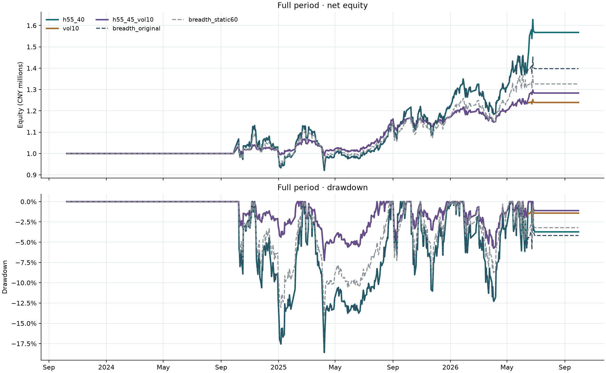

第四轮 · 市场宽度与波动率研究
固定协议下的 12 组配置、56 次主回测；三组新策略在开发与验证期后预选。相邻组合参数另追加 4 次成本诊断，单独标记。
冻结协议 · 预选记录 · 全部结果 · 审计验证 · 原始工作台基准
全期：2023-10-09—2026-09-30；开发段：2023-10-09—2024-12-31；验证段：2025-01-02—2025-12-31；后段：2026-01-05—2026-09-30。收益均已扣佣金和滑点。
结论与取舍
预选三组中，55% 进场、45% 退出并限制组合波动率至 10% 的配置通过了原先全部质量门槛。12% 和 15% 是事先列入完整参数矩阵的相邻配置，其全期比较及追加成本检查属于事后探索；预选名单保持不变。
保留原宽度开关、仅加波动率控制的 12% 与 15% 配置也通过了正常成本门槛。组合控制的平均仓位明显低于原策略，表内同时列出固定降仓对照，便于区分降低仓位和改变择时的效果。
单独改变宽度进出阈值的四组配置在本样本中做出了相同决定。与原策略相比，仅在 2026-06-12、宽度为 45% 时出现一次不同的周度目标：原策略清仓，新规则继续持有。因此宽度缓冲带来的增益集中于一次判断，不能把四组相同结果当成四份独立的稳健证据。完整历史上下文的信号核对。
本轮方法假设参考 Moreira 与 Muir 的波动率管理研究；这里使用当前候选篮子的过去 60 日波动率，只减仓、不加杠杆。论文中的市场与本 ETF 样本不同，实测结果见下表。
全期间净值与回撤
实线为开发和验证期预选的三组配置，虚线为两个基准；均为正常成本。

全部候选配置
顺序按冻结家族与参数表。Δ 相对 breadth_original，正回撤差值表示回撤更大。旧质量门槛：Full CAGR ≥ 8%、最大回撤 ≤ 15%、Sharpe ≥ 0.7，且三个独立子期间收益均为正。Full 与后段的其他优胜点属于事后探索，不改变预选名单。
| 家族 | 配置 | 预选 | 冻结参数 | Full CAGR | Full 回撤 | Full Sharpe | Δ CAGR | Δ 回撤 | Δ Sharpe | 开发收益 | 验证收益 | 后段收益 | 平均仓位 | 交易成本/元 | 旧质量门槛 |
|---|---|---|---|---|---|---|---|---|---|---|---|---|---|---|---|
| 不同进出场阈值 | h55_45 | — | {"entry_breadth":0.55,"exit_breadth":0.45} | 16.88% | 18.60% | 0.88 | 4.55% | 0.00% | 0.19 | -0.42% | 29.74% | 21.93% | 45.56% | 22121.09 | 未通过 |
| 不同进出场阈值 | h55_40 | 入选 | {"entry_breadth":0.55,"exit_breadth":0.4} | 16.88% | 18.60% | 0.88 | 4.55% | 0.00% | 0.19 | -0.42% | 29.74% | 21.93% | 45.56% | 22121.09 | 未通过 |
| 不同进出场阈值 | h60_45 | — | {"entry_breadth":0.6,"exit_breadth":0.45} | 16.88% | 18.60% | 0.88 | 4.55% | 0.00% | 0.19 | -0.42% | 29.74% | 21.93% | 45.56% | 22121.09 | 未通过 |
| 不同进出场阈值 | h60_40 | — | {"entry_breadth":0.6,"exit_breadth":0.4} | 16.88% | 18.60% | 0.88 | 4.55% | 0.00% | 0.19 | -0.42% | 29.74% | 21.93% | 45.56% | 22121.09 | 未通过 |
| 波动率控制 | vol10 | 入选 | {"target_vol":0.1} | 7.73% | 7.25% | 1.00 | -4.60% | -11.35% | 0.31 | 1.03% | 17.37% | 3.72% | 18.92% | 12208.64 | 未通过 |
| 波动率控制 | vol12 | — | {"target_vol":0.12} | 9.25% | 8.66% | 1.00 | -3.08% | -9.94% | 0.31 | 1.22% | 20.95% | 4.45% | 22.94% | 14096.82 | 通过 |
| 波动率控制 | vol15 | — | {"target_vol":0.15} | 10.05% | 10.75% | 0.91 | -2.28% | -7.84% | 0.22 | 1.49% | 21.68% | 5.53% | 27.60% | 16330.85 | 通过 |
| 进出阈值＋波动率 | h55_45_vol10 | 入选 | {"entry_breadth":0.55,"exit_breadth":0.45,"target_vol":0.1} | 9.05% | 7.25% | 1.15 | -3.28% | -11.35% | 0.45 | 1.03% | 17.37% | 7.42% | 19.06% | 11884.16 | 通过 |
| 进出阈值＋波动率 | h55_45_vol12 | — | {"entry_breadth":0.55,"exit_breadth":0.45,"target_vol":0.12} | 10.85% | 8.66% | 1.14 | -1.48% | -9.94% | 0.45 | 1.22% | 20.95% | 8.92% | 23.11% | 13679.21 | 通过 |
| 进出阈值＋波动率 | h55_45_vol15 | — | {"entry_breadth":0.55,"exit_breadth":0.45,"target_vol":0.15} | 12.06% | 10.75% | 1.06 | -0.27% | -7.84% | 0.37 | 1.49% | 21.68% | 11.18% | 27.80% | 15785.12 | 通过 |
两个基准
| 基准 | Full CAGR | Full 回撤 | Full Sharpe | 开发收益 | 验证收益 | 后段收益 | 平均仓位 | 交易成本/元 |
|---|---|---|---|---|---|---|---|---|
| breadth_original | 12.33% | 18.60% | 0.69 | -0.42% | 29.74% | 8.74% | 45.11% | 23437.95 |
| breadth_static60 | 10.29% | 14.19% | 0.73 | -0.48% | 22.94% | 8.68% | 33.97% | 17667.35 |
双倍交易成本压力测试
佣金率、最低佣金和滑点均乘以 2；收益列 Full 为 CAGR，后段为区间收益。追加邻域检查是在查看正常成本结果后进行的诊断，不改变预选名单；追加方案 · 核验结果。
| 配置 | 区间 | 正常收益 | 双倍成本收益 | 收益差 | 双倍成本回撤 | 双倍成本 Sharpe | 双倍交易成本/元 |
|---|---|---|---|---|---|---|---|
| h55_40 | full | 16.88% | 16.09% | -0.80% | 18.85% | 0.85 | 43935.94 |
| h55_40 | late | 21.93% | 23.72% | 1.79% | 12.41% | 1.40 | 12832.51 |
| vol10 | full | 7.73% | 7.31% | -0.42% | 7.27% | 0.95 | 24278.44 |
| vol10 | late | 3.72% | 3.39% | -0.33% | 5.86% | 0.58 | 6330.19 |
| h55_45_vol10 | full | 9.05% | 8.63% | -0.41% | 7.27% | 1.10 | 23637.89 |
| h55_45_vol10 | late | 7.42% | 7.11% | -0.31% | 5.86% | 1.11 | 5805.45 |
| breadth_original | full | 12.33% | 11.53% | -0.80% | 18.85% | 0.65 | 46514.32 |
| breadth_original | late | 8.74% | 10.23% | 1.49% | 12.41% | 0.73 | 14859.01 |
| h55_45_vol12（追加邻域检查） | full | 10.85% | 10.37% | -0.48% | 8.68% | 1.10 | 27211.82 |
| h55_45_vol12（追加邻域检查） | late | 8.92% | 8.56% | -0.36% | 7.00% | 1.11 | 6801.59 |
| h55_45_vol15（追加邻域检查） | full | 12.06% | 11.51% | -0.55% | 10.78% | 1.02 | 31435.17 |
| h55_45_vol15（追加邻域检查） | late | 11.18% | 10.73% | -0.46% | 8.70% | 1.12 | 8272.36 |
工作台记录
- h55_40 · full: 0a8ba0dc-5dce-43c2-9b6e-aa0ac8c8edea
- vol10 · full: 07ffac32-8338-4c6e-96be-fa04eb35e8a4
- h55_45_vol10 · full: e8645192-1c66-4e56-a504-7dc71890f559
- h55_40 · late: 9030eea9-6e82-42dd-8584-5b94a626c32c
- vol10 · late: 51a5ca92-f5c7-448e-85dc-6c4990167774
- h55_45_vol10 · late: c30d02f5-5433-49d1-bbee-60c89f81eca6
- h55_45_vol12 · full: 8e32c5e8-43f1-4d0b-9f9d-0802f7e0672e
- h55_45_vol15 · full: 8017fbc5-76a9-4257-b773-965d3d37e1eb
- h55_45_vol12 · late: 19e340a5-9ce7-474a-a8dd-ba17f3f54aae
- h55_45_vol15 · late: 89e49090-c82c-4d75-9fa0-8141e0c25e94